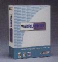
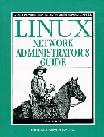
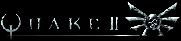
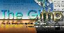
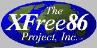

1998 Readers' Choice Awards
Amy Kukuk
Issue #57, January 1999
You voted, we counted, here are the results.
This year, the number of Readers' Choice
awards expands once more to include 28 categories of Linux
favorites. The voting took place on the Linux Journal web site for two months. Over 3000 votes were
cast, with over 50% of them from Germany. This is a small number of
votes considering the number of subscribers we have. Next year,
exercise your right to vote and help determine the winners.
Each year it is quite a surprise to scan through the results.
Go ahead, see for yourself!
Favorite Audio Application
Winner: RealAudio
Runner Up: Soundstudio

Winner: BRU
Runner Up: CTar

Winner: Linux
Network Administrator's Guide by Olaf Kirch and Andy
Oram
Runner Up: Running Linux by Matt
Welsh
Winner: Netscape
Runner Up: Lynx
Most Used Business Application
Winner: StarOffice
Runner Up: Applixware
Winner: Kernel Korner
Runner Up: Best of Technical Support
Primary Communications Board
Winner: Cyclades
Runner Up: Digi
Winner: MySQL
Runner Up: PostgreSQL
Winner: GCC
Runner Up: XEmacs
Favorite Linux Distribution
Winner: S.u.S.E.
Runner Up: Red Hat
Winner: vi
Runner Up: Emacs
Winner: Midnight
Commander
Runner Up: xfm

Winner: Quake
Runner Up: XTetris
Best Graphics Application

Winner: GIMP
Runner Up: xv
Favorite Programming Language
Winner: Perl
Runner Up: Tcl/Tk
Winner: Netscape
Runner Up: Pine
Winner: Ethernet
Runner Up: ISDN
Winner: VA Research
Runner Up: Linux Hardware Solutions
Winner: Intel
Runner Up: AMD
Winner: Toshiba
Runner Up: IBM
Winner: PGP
Runner Up: sshd
Winner: Bash
Runner Up: tcsh
Most Loved Special Purpose Tool
Winner: PalmPilot
Runner Up: plan
Winner: APC
Runner Up: Best Power
Winner: Xanim
Runner Up: RealPlayer
Winner: slashdot.org
Runner Up: linux.org
Winner: KDE
Runner Up: Fvwm

Winner: XFree86
Runner Up: Accelerated X
More information about the winning products and programs and
other Linux hardware and software is available on our Linux
Resources web site at http://www.linuxresources.com/.
Planning for the 1999 Readers' Choice Awards is already
underway. If you have ideas for new categories, questions or
comments, please e-mail info@linuxjournal.com. Voting for next year's
awards will be held in August and September on the Linux Journal web site, http://www.linuxjournal.com/.